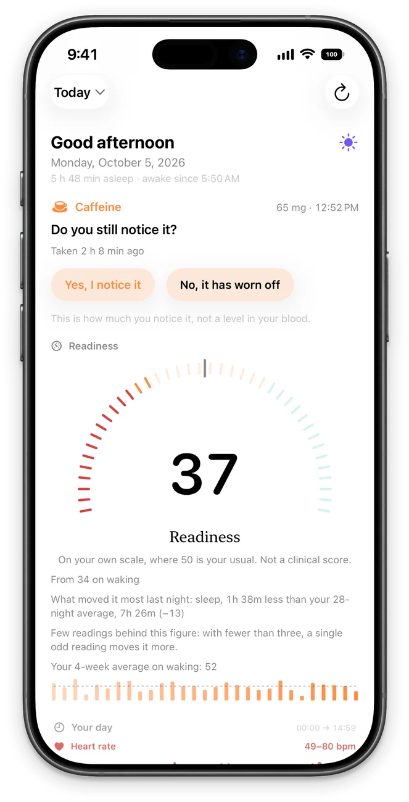
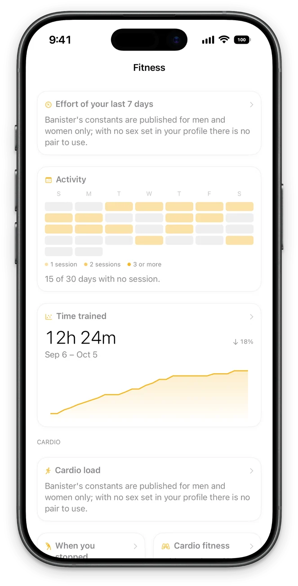
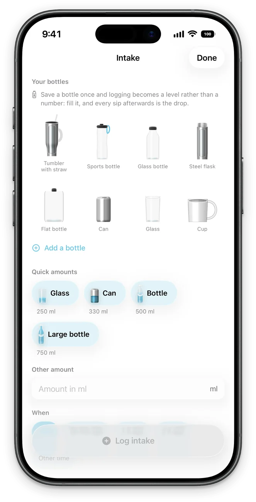

iPhone · Apple Watch · and now, Mac
Your data, measured against you.
Narelia reads your Apple Watch and compares you with yourself, on the iPhone and with no account. And now, from your Mac, it can bring your figures to the AI you already use. With no Narelia server in between, because there isn’t one.

The iPhone app is free with no account, on iOS 26. Apple Watch recommended.


The path your figures take.
Four stops, all of them yours. What your AI proposes comes back the same way and waits on the iPhone until you say yes.
-
Your iPhone
Narelia works everything out here and writes only the figures you choose, encrypted with your password.
-
Your folder
iCloud Drive › Narelia, in your own account. Narelia creates it for you from the iPhone.
-
Your Mac
Narelia for Mac opens the file with the password kept in your Keychain, and serves it through narelia-mcp.
-
Your AI
Claude, Codex, Cursor, OpenClaw… The one you already use reads your figures and can propose a log.
Anything your AI asks to log goes back to the iPhone and is not saved until you confirm it there.
Narelia server
There isn’t one: no account to create and no copy of anything of yours on our side.
The app
Every figure, against your own history.
Narelia does not compare you with a population chart. It compares you with your own nights and weeks, says how much each signal moved, and never claims more than the data supports.
-
Your numbers against your own history
-
Your stress through the day, the night kept apart

-
Your effort against your own weeks

-
Your vessels and your quick amounts

-
No account, no server; iCloud only if you turn it on

- Readiness
- It starts from your morning recovery and moves with what the watch measures through the day. If you slept without the watch, it says so: “Daytime only”.
- Recovery
- Variability, resting heart rate, breathing and sleep against your own nights, with how much each signal moved.
- Night, stress and vitals
- The night by stage, stress through the day and each vital on its personal range.
- Fitness
- The week’s effort against your usual weeks, with your workouts and strength sessions.
- Meals from a photo
- Narelia suggests what is on the plate and you confirm it. It is read on the iPhone itself, with Apple Intelligence on compatible models.
- Water and caffeine, in 3D
- With your bottle, cup or can: drag the level on the vessel itself. Creatine and protein too.
- Siri and Apple Intelligence
- Ask for your variability, recovery or the night, and it answers like its screen does, without a network. Shortcuts offers “Get Narelia data”.
- Watch and widgets
- Apple Watch has its own app and complications; the iPhone, widgets in four styles.

New · Narelia for Mac
Your AI, with your figures in front of it.
- Today. The figures your iPhone wrote, with their week and your range.
- Pending. What your AI has asked to log, waiting on the iPhone.
- Connect with your AI. 22 apps and agents; 15 are set up with one button.
With the AI you already use.
Chat apps
Claude Desktop LM Studio AnythingLLM Jan Msty Studio Cherry Studio Chatbox
Agents
Codex Claude Code Gemini CLI Antigravity OpenCode Goose Hermes Agent OpenClaw Muse Code Copilot CLI Cline
Editors
Cursor VS Code Devin Desktop Zed
Set up for you with “Connect” By hand: Narelia gives you what to paste
The step-by-step guideBeyond the app.
Readiness, hourly heart rate, stress, sleep, vitals, water and activity, on your Home Screen, Lock Screen and Apple Watch. In four styles: Narelia, Night, Editorial and Classic.


No account. No server.
All analysis happens on your iPhone. Your data lives there and in the Health app; the iCloud copy is optional, goes to your own account and is off until you turn it on.
With your AI, you choose which figures it sees and when it stops seeing them. The one receiving them is that AI, under its own terms: read them before you connect it.
No analytics and no advertising identifiers. Your own figures never sit behind a payment; Narelia Pro adds tools such as guided experiments, the PDF report and Connect your AI. Read the privacy policy.
Start with the iPhone.
Your baselines start forming with your first nights wearing the watch. The Mac and your AI, whenever you like.